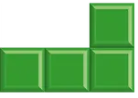
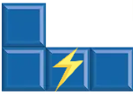
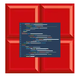
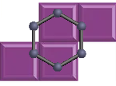
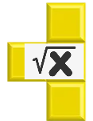

Como dijimos antes, TetriSTEM presenta 5 tipos de bloques: Normal, Energía, Moléculas y Matemáticas.
Bloque Normal

El bloque normal de siempre. No tiene ningún efecto sobre la partida.
Bloque Energía

Bloque eléctricamente cargado que atrae a otros bloques de energía.
Bloque Código

Bloque de dos tipos diferentes (if/else o bucle for) que condicionaran los siguientes bloques en aparecer.
Bloque Moléculas

Bloque químico de un tipo de elemento específico. No supondrá efecto alguno si se junta con un bloque de otro tipo, aunque ten cuidado al juntarlo con otro bloque molecular, o podrías explotar tu cuadrícula de juego.
Bloque Matemáticas

Bloque matemático en el que deberás realizar una operación antes de moverlo en un límite de tiempo.